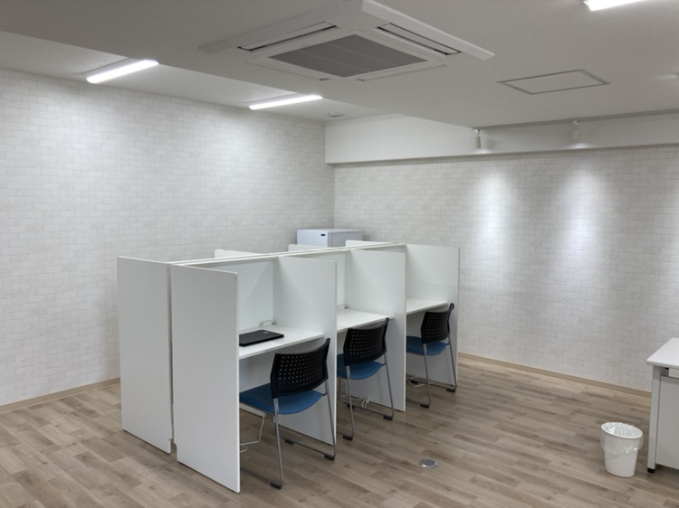
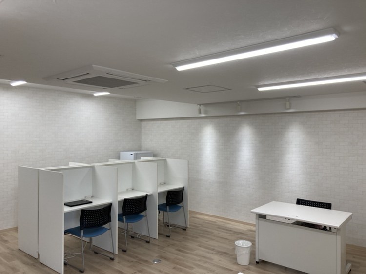
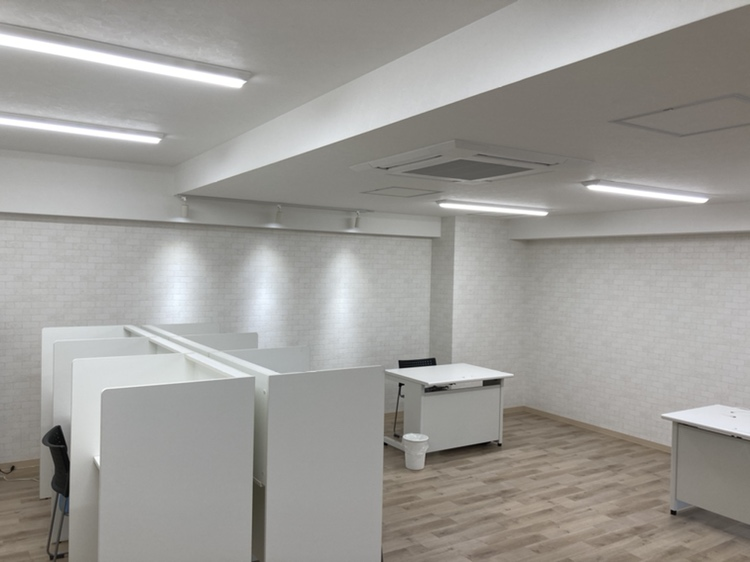
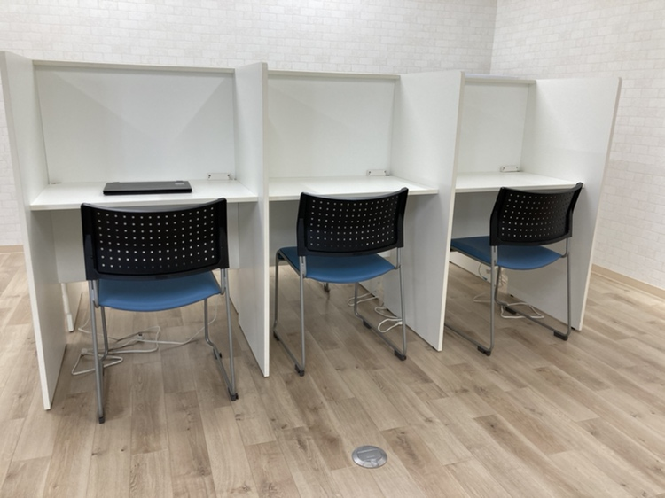
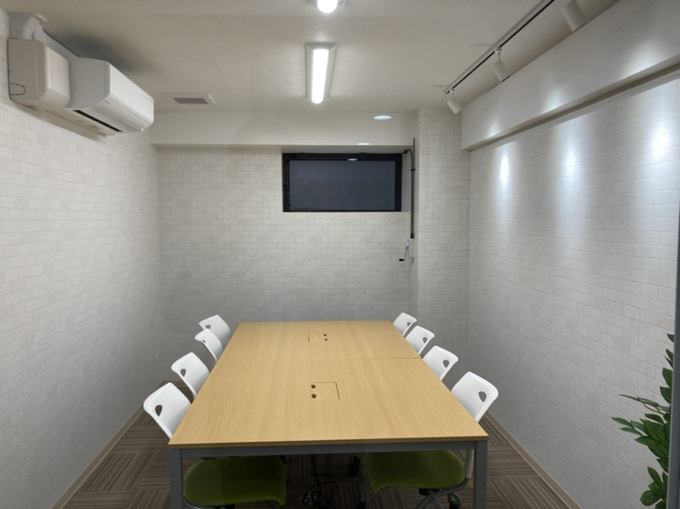
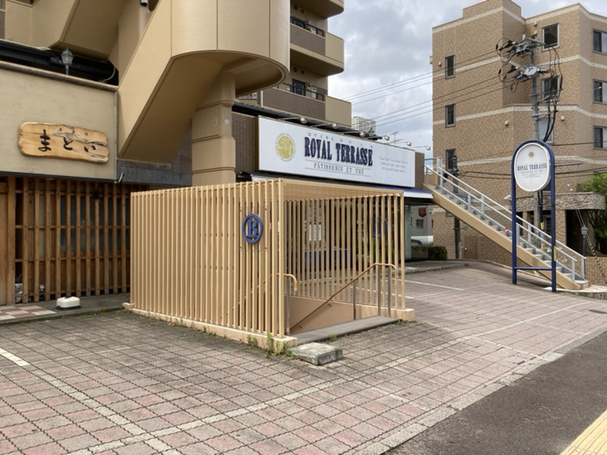

SERVICE事業内容
仙台市にある就労継続支援B型事業所です。
弊社での作業はパソコンを使用しての作業や手作業も豊富に用意があり、在宅での作業も可能になっております。
また、就職に向けた訓練や各種講座や資格取得に向けた学習の機会を持つことも可能です。
就労継続支援B型とは？
就労継続支援B型は、一般企業や他の雇用形態での就労が難しい方々に向けて提供される支援サービスです。
働くために必要な知識やスキルを身につけるための訓練を受けることも可能です。
また、就労継続支援B型事業所での仕事は「生産活動」とよばれ、その対価として「工賃」を受け取ります。生産活動の内容は事業所によって異なりますが、農作業や部品加工などの軽作業が多く、細分化された作業を行う場合が多いです。
この制度は、障害者をお持ちの方が社会参加や自己実現を図るために重要な役割を果たしています。
-
障害者の
職業生活支援障害者の能力や意欲に合わせて、適切な職場環境や支援を提供します。
-
就労スキルの向上
職業訓練や指導を通じて、障害者のスキルや能力を向上させます。
-
生活支援の実施
生活リズム改善の取り組みについて相談援助を行います。
-
自立した
就労の促進障害者が能力に応じて自立した就労を目指し、経験や自己成長を重ねます。
-
自企業との連携
企業や事業所と連携し、障害者の雇用や働きやすい環境を実現するための支援を行います。
JOB仕事の内容
-
PCを使用した作業
- 書類のスキャン
- エクセルファイルへのデータ入力
- PDFデータのファイル名書き換え
- BPO作業※BPOビジネスプロセスアウトソーシング
→レシート入力業務
- 在宅就労の場合はPC作業になります。
-
手作業
- DM（ダイレクトメール）の封入、ラベル張り、チラシ折り
- 製本作業
- シュレッダー作業
- ポスティング
イベントもあり！
- 外出行事（タピオ、三井アウトレット、動物園など昼食を食べながらリフレッシュをします）
- 出前行事（地域の飲食店から出前を取ります）
PLACE事業所
ジョブサポートYOU旭ヶ丘
宮城県仙台市青葉区旭ヶ丘3丁目6-12フォレスト旭ヶ丘T101
サテライトオフィス
ジョブサポートYOU旭ヶ丘事業所限定で新たにサテライトオフィスが完成しました。
白を基調とした落ち着いた空間で働くことができます。
【住所】仙台市青葉区旭ヶ丘3丁目17番地18号パレスビジョンB1FROOM E
【アクセス】仙台市市営地下鉄旭ヶ丘駅徒歩4分
- 
- 
- 
- 
- 
- 
ジョブサポートYOU泉中央
仙台市泉区泉中央3丁目36-1セントレアカマⅡ201
PRICE金額
| 区分 | 世帯収入状況 | 負担上限月額 |
| 生活保護 | 生活保護受給世帯 | 0円 |
| 低所得 | 市町村民税非課税世帯 | 0円 |
| 一般1 | 市町村民税課税世帯（所得割１６万円未満） ※入所施設利用者（２０歳以上）、グループホーム利用者を除きます |
9,300円 |
| 一般2 | 上記以外 | 37,200円 |
※詳細は自治体にご確認ください
所得を判断する際の世帯の範囲は、次のとおりです。
| 種別 | 世帯の範囲 |
| 18歳以上の障害者 （施設に入所する18、19歳を除く） |
障害のある人と その配偶者 |
| 障害児 （施設に入所する18、19歳を含む |
保護者の属する 住民基本台帳での世帯 |
OTHERその他
1食225円で昼食を提供しています。30種類の中からお好きなメニューを日替わりで楽しめます。
料金は工賃から天引きになります。
TRANSPORTATION送迎範囲
就労継続支援B型のみ送迎を実施しております。
送迎範囲については約５ｋｍ圏内としております。
詳しくはご相談ください。